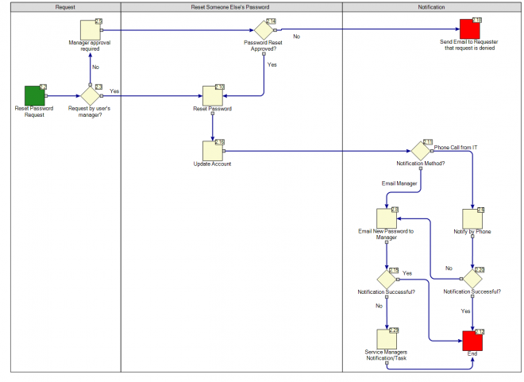
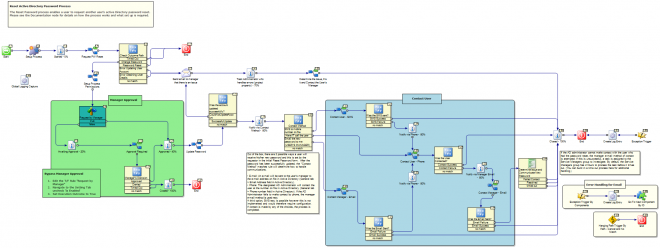
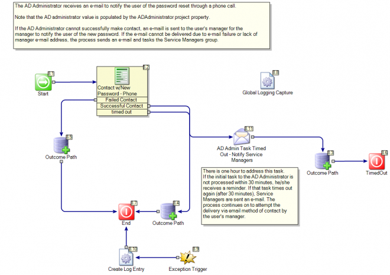
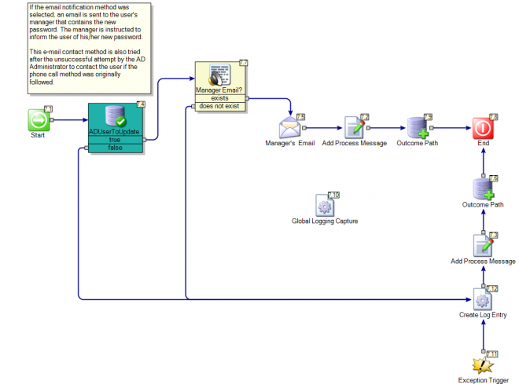
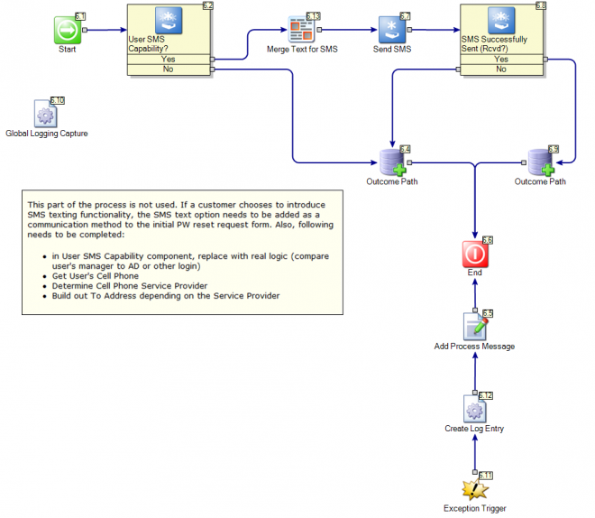
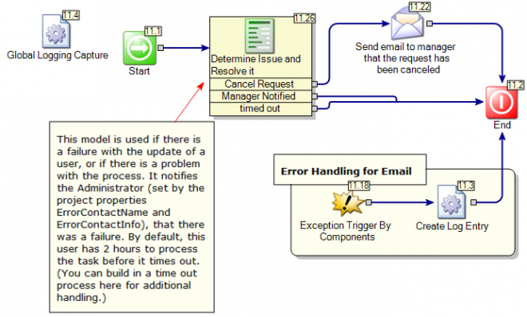
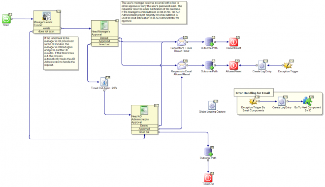
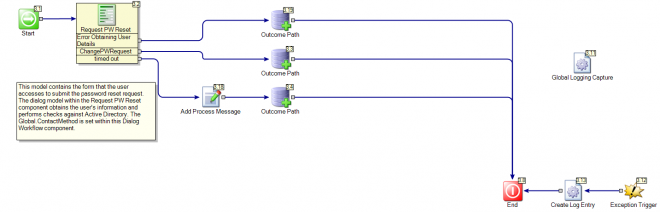

Reset Password

Name
Symantec.Workflow.ResetPassword
Description
Allows you to reset a password automatically in Active Directory.
- Enables a manager to reset the Active Directory password for an employee. Also enables a user to request a password reset for another user, with manager approval required.
- Initiated by browsing to a Password Reset Request form
Author mail:
nancy_mitchelmore@symantec.com
Process Prefix: "ITSR-"
Documentation
| Reset Active Directory Password Process
The Reset Password process enables a user to request another user's Active Directory password reset. A user cannot request his/her own password reset.
Prerequisites for implementing this process are to
In order for a user to have his/her password changed, the user must exist in Active Directory.
User accounts must be active in Active Directory (Account tab > Account is Disabled unchecked).
The account must be able to have password changed in Active Directory (Account tab > User Cannot Change Password unchecked).
The user’s manager must be designated within the Organization tab of Active Directory, or the user’s active and accurate phone number must be populated within the user account in the General tab > Telephone Number field. The manager must also have a valid e-mail address populated within the General tab > Email Address field within Active Directory.
From the Properties tab in the project in the Workflow Designer, set the desired group names and e-mail information, and Active Directory settings.
The group names and e-mail addresses are populated by these properties:
ADAdministrator (the e-mail address of the user responsible for notifying a user of a new password by phone).
GroupServiceManagers, ServiceManagerGroupEmail (the name and e-mail address of the group notified when there is a problem with notifying the user after both calling and unsuccessful e-mailing of the user’s manager).
AdministratorContactName, AdministratorContactInfo, AdministratorEmail (used when there is a failure with the process or if the user’s manager cannot be contacted by e-mail to approve a password reset request).
The e-mail server settings are populated by these properties: SMTPServer, MailFromAddress.
The AD settings are populated by these properties: ADDomainName, ADServer, ADDomainAdminUser, ADDomainAdminPassword.
6. Verify that you want the tasks/e-mails to go to the following users, and change the task assignment in the Dialog Workflow components as desired. No tasks are assigned, only e-mails are sent by default. The following users/groups are used:
AD Administrators - AD Administrators are tasked with contacting a user by phone to notify of a password reset. (Deliver via Contact model > Contact w/New Password – Phone Dialog Workflow component.)
Service Managers - When an AD Administrator cannot contact a user, Service Managers are tasked to figure out the issue. (Primary model > Determine Issue and Communicate New Password Dialog Workflow component.)
Administrators - Administrators are used when there is a failure with the process or if the user’s manager cannot be contacted by e-mail to approve a password reset request. (Determine Issue and Resolve it model > Determine Issue and Resolve It Dialog Workflow component. Also, Request Manager Approval Model > Need Administrator’s Approval Dialog Workflow component.)
If you wish to use Process Manager for task assignment, set up the task assignment in the Dialog Workflow components. The default setting is "DefaultTaskSource." Change this to "ProcessManagerTaskSource" and scroll down to the Task Assignments section and make the desired task assignments.
General process rules:
- Users cannot request own password reset
- Manager approval is required*
- New password is randomly generated
- User's account is updated with the new password
- User's account is set to require new password at next logon (which must be done before the user attempts to log in to the Process Manager portal)
- An e-mail with the temporary password is sent to the user's manager*
Requesters have two methods of performing the password reset:
If the requester is the user’s manager (determined by the manager set for the user on the Organization tab for the user in Active Directory), approval is assumed and the reset happens automatically. Otherwise, an e-mail/task goes to the user's manager to approve the reset. The e-mail to approve the reset goes to the e-mail address set on the manager’s record on the General tab > Email Address field in Active Directory.
Asking the AD Administrator to do the password reset (after getting manager approval from the user's manager), then calling the user to notify of the reset.
*If manager information is not found, meaning specific task assignment/email contact cannot be made to the manager, the process automatically emails Administrators for approval of a password reset.
Method 1
1. If manager name and/or e-mail address cannot be found, the requestor must use method #2.
2. The process checks to see if the requestor is the user's manager, and if not, the appropriate manager is looked up in Active Directory and tasked with approval.
3. Upon approval, the manager receives an e-mail containing the new password to share with the user. The user must change the password upon initial login.
Method 2
1. If no phone number for the user is found, the requestor must use method #1.
2. The process checks to see if the requestor is the user's manager, and if not, the appropriate manager is looked up in Active Directory and tasked with approval. If the manager email information is not found, the email approval message goes to the Administrator.
3. Upon approval, the AD Administrator receives an e-mail containing the new password to share with the user by phone. The user must change the password upon initial login.
4. If the user cannot be contacted, the AD Administrator completes a form stating unsuccessful contact. If the phone call is not successful, an e-mail goes to the manager of the user. If the e-mail fails, an e-mail/task then goes to the Service Managers to further attempt contact. If unsuccessful, Service Managers complete a form explaining why and the process ends. | | --- |
Password Reset Business Model

Primary

| Reset Active Directory Password Process
The Reset Password process enables a user to request another user's active Directory password reset. Please see the Documentation node for details on how the process works and what set up is required.
---
Out of the box, there are 2 possible ways a user will receive his/her new password and this is set by the requestor in the initial Reset Password form. After the password has been successfully updated, the “Contact Method” matches rule will determine how to handle communications.
- E-mail: An e-mail will be sent to the user’s manager to the e-mail address on file in Active Directory (General tab > Email Address field in Active Directory).
- Phone: The designated AD Administrator will contact the user at the number on file in Active Directory (General tab > Phone number field in Active Directory). If the AD Administrator fails to make contact by phone, the manager e-mail method is used next.
A third option, SMS text, is possible however this is not implemented and would therefore require configuration.
If contact is made by any of the choices, the process is completed.
---
Bypass Manager Approval
Edit the T/F Rule "Request by Manager"
Navigate to the Setting Tab uncheck 'Is Enabled'
Set Execution Outcome to True
---
If the AD administrator cannot make contact with the user who had the password reset, the manager e-mail method of contact is attempted. If this is unsuccessful, a task is assigned to the Service Managers group to investigate. By default, the Service Managers group has 2 hours to process the task before it times out. (You can build in a time out process here for additional handling.) | | --- |
Dialog Workflow(s)
- Determine Issue and Communicate New Password
Delivery via Contact

| In this model, the phone call method of contact is handled. The AD Administrator will receive a task to Contact via Phone if the requestor chose to be contacted via phone OR if any of the other 2 methods failed.
This form can be found in the “Contact w/New Password - Phone” Dialog Workflows within the same linked model. When the AD Administrator makes contact, the he/she will mark the task accordingly. At this point the process is completed.
If the AD Administrator is unsuccessful, he/she will mark the task accordingly. At this point, the user’s manager receives an e-mail with the password information to notify the user. If the e-mail delivers successfully, the process is complete.
If the user’s manager did not have an e-mail address on file, or the e-mail fails for any reason, the Service Managers group is tasked to look into the issue. An email sent to the requestor informing him/her that the AD Administrator was unable to contact the user. |
| --- |
Dialog Workflow(s)
- Contact w/New Password - Phone
Delivery via Email

| This model executes the e-mail delivery of a user's password to the user's manager, if the email notification method was selected. The manager is instructed to inform the user of his/her new password. This e-mail contact method is also tried after the unsuccessful attempt by the AD Administrator to contact the user if the phone call method was originally followed. |
|---|
Delivery via SMS

This model is not used but is retained in case SMS texting is desired. If a customer chooses to introduce SMS texting functionality, the SMS text option needs to be added as a communication method to the initial PW reset request form. Also, following needs to be completed:
|
|---|
Determine Issue and Resolve It

| This model is used if there is a failure with the update of a user, or if there is a problem with the process. It notifies the AD Administrators that there was a failure. |
|---|
Dialog Workflow(s)
- Determine Issue and Resolve it
Request Manager Approval

| In this model, the user's manager receives an email with a link to either approve or deny the user's password reset. If the request is not processed within 30 minutes (as configured from the Event Configuration tab > Timeout Configuration section), the process adds Service Managers to the request and gives anohter 30 minutes for processing. If that times out, then the process tasks the AD Administrator to process the request.
The requestor receives email notification of the outcome.
If the manager's email address is not on file, the Administrator project property for email address is used to send notification to an AD Administrator for approval.
You can bypass the managerial approval if you choose:
- Disable the “Request by Manager” component
- Right click on the model and choose “Edit Component”
- Navigate to the “Settings” tab and uncheck the “Is Enabled” check box
- Set the Execution Outcome to True
- Click on OK
Request PW Reset

| This model contains the form that the user accesses to submit the password reset request, and handles the three steps described below. The dialog model within the Request PW Reset component obtains the user's information and performs checks against Active Directory. The Global.ContactMethod (the global variable that tells the method of contact), is set within this Dialog Workflow component.
Step 1: Submit Request
The requestor may choose to only reset someone else’s password. If the requester is not the user’s manager, approval will be required. Required fields are Email or User Name, and Notification Method. Additional Notes is optional and is for the requestor to provide further information such as an alternative phone number to what is on file in the Active Directory.
Upon click of the Submit button, the process will confirm that the user is in Active Directory, the account is active, and the password can be changed. The process also confirms whether the manager e-mail address is present if that method of notification is selected, or if the user’s phone number is present, if that method of contact is selected.
Step 2: Reset Someone Else’s Password
If the requestor is not the user’s manager, an email will be sent to the appropriate manager* requesting authorization. If the request is denied, the manager is required to provide a reason. Regardless of the decision, the requestor will receive an email that will let him/her know.
*The manager information is obtained from the Active Directory. If no manager is found, by default Administrators in Process Manager must handle approval.
Step 3: Generate Password
If the request is an authorized request, that is if a manager submitted the request or the manager approved the request, the “Creating Password” embedded rule model will create a new password and update the user’s account. The account is also updated to required Change Password on next successful logon.
If the password cannot be updated, AD Administrators are notified and an email is sent to the manager. |
| --- |
Dialog Workflow(s)
- Request PW Reset
Properties
| Name | Category | Value | Description |
|---|---|---|---|
| GroupServiceManagers | Service Managers | ||
| LoginFailureURL | |||
| NSVersion | NS7 | ||
| ProcessManagerURL | http://localhost/ProcessManager | ||
| ProcessManagerVirtualDirectory | ServiceDesk.ResetPassword | ||
| SMTPServer | localhost | ||
| ADAdministratorEmail | ADADmin@symantec.com | ||
| MailFromAddress | no-reply@symantec.com | ||
| ServiceManagerGroupEmail | ServiceManagers@symantec.com | ||
| ErrorContactName | ContactName | ||
| ErrorContactInfo | ErrorContact@symantec.com | (must be an e-mail address) |
AD Properties too.
Global Data
| Name | Value |
|---|---|
| CurrentStatus | |
| ContactMethod |
Documented on Connect by: